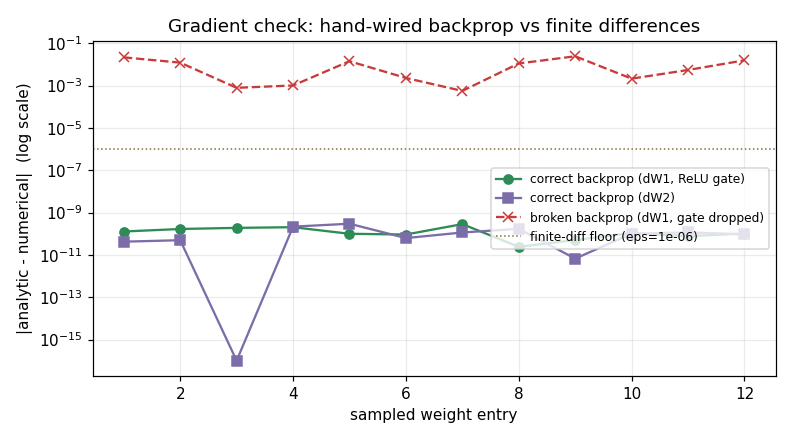

The gradient check: how a hand-wired backprop proves itself before it wastes a run
Day 1 left us with a correctly-wired 784 → 128 → 10 MLP whose 101,770 knobs were still random, so it guessed at chance. Day 2 wires the corrector: a loss scalar, its gradient for every weight, and one reverse sweep that computes them all by reusing the forward pass. The interesting engineering claim is not "backprop works" — it's that backprop is *easy to get subtly wrong and impossible to notice*, so the only defensible way to trust a hand-derived gradient is to check it against a slow-but-honest finite-difference gradient. This note produces that check on a real network and then deliberately breaks it. Every number below comes from experiment.py, seeded for reproducibility, in float64.
The mechanism: one reverse sweep, four local slopes
The forward pass on a batch of 32 caches three arrays — z1, h, probs. The backward pass reuses them and never recomputes a per-weight slope:
dlogits = (probs - y_true) / B # softmax + cross-entropy collapses to this
dW2 = h.T @ dlogits # (128,10) — local slope of the last linear step is h
dh = dlogits @ W2.T # hand the blame back through W2
dz1 = dh * (z1 > 0) # through the ReLU gate: blame only where the unit was ON
dW1 = x.T @ dz1 # (784,128) — local slope of the first linear step is x
The load-bearing property is the shape contract: each gradient must have the same shape as its weight, because the update rule subtracts them elementwise. The run confirms it exactly:
dW1 (784, 128) vs W1 (784, 128) -> MATCH
dW2 (128, 10) vs W2 (128, 10) -> MATCH
A transpose in the wrong place would flip one of these to (128, 784) and either crash or — worse — silently broadcast. Shape agreement is necessary but *not sufficient*: a gradient can have the right shape and the wrong value. That is what the numerical check is for.
The proof: analytic vs finite differences
The finite-difference (numerical) gradient is the pre-backprop ancestor. For one weight entry w, nudge it by ε and re-run the forward pass: grad ≈ (loss(w+ε) − loss(w−ε)) / (2ε). It costs one forward pass per weight, so it is useless for training 101,770 knobs — but it is almost impossible to derive wrong, which makes it the perfect *test*. Comparing our fast analytic backprop against it on 12 sampled entries per matrix (ε = 1e-6):
A max absolute disagreement of 2.975e-10 across every sampled entry means the analytic and numerical gradients agree to ~10 decimal places — proof the chain rule was composed correctly through both the linear and ReLU steps. The residual is not backprop error; it is the O(ε²) truncation of the central difference plus float64 round-off, well below the ε = 1e-6 floor. The reviewer's takeaway: a central-difference check that lands near 1e-7–1e-10 is a *pass*; one that lands at 1e-2 or higher is a bug, not noise.
Failure mode: the silent gradient bug that never crashes
Now break exactly one term. Drop the ReLU gate — dz1 = dh instead of dz1 = dh * (z1 > 0) — so blame leaks backward through hidden units that were *off* during the forward pass. This is the single most common backprop bug: the gate is trivial to forget because the code still runs, still produces correctly-shaped gradients, and still lowers the loss *most* of the time. Re-run the identical check on the identical batch:
The disagreement jumps from 2.849e-10 to 2.437e-02 — the same check is now 8.2e+07× worse. Nothing threw. No stack trace, no NaN, no shape error. The only signal that the gradient is wrong is the number the check prints. This is the whole reason gradient checking is a discipline and not a formality: an incorrect gradient produces a descent direction that is *plausible but wrong*, so the loss often still trends down on easy batches and the bug survives into an overnight run before anyone notices the model plateaus early. You catch it in seconds on a tiny net, or you catch it in hours of wasted compute — the physics of the failure is identical either way; only the cost differs.
Design trade-off: analytic speed vs numerical trust — and the learning rate
Two trade-offs sit on top of this mechanism.
Analytic vs numerical gradient. The analytic backward sweep is fast — one pass, all 101,770 gradients — but easy to get subtly wrong (a sign flip, a missing gate, a transpose). The numerical gradient is trustworthy to ~10 decimals but pays one forward pass *per weight*, which is why nobody trains with it. Standard practice is exactly what this experiment does: use the numerical gradient once, on a tiny net, as a *check*, then trust the fast analytic one for real training. You buy correctness insurance for the price of ~24 extra forward passes.
The learning rate is a knob, and its sign of effect is not free. Backprop gives the *direction*; the update param = param − lr × gradient needs a *size*. The run shows both regimes on the same correct gradient and the same batch:
right-sized lr=0.05 loss 2.620411 -> 2.150728 (delta -0.469683)
too-large lr=0.5 loss 2.620411 -> 9.245406 (delta +6.624995)
At lr = 0.05 a single step cuts the loss by 0.47 — the corrector works. At lr = 0.5 the *same correct gradient* overshoots the valley and the loss *climbs* by 6.62. This is the subtle point for a staff-level reader: a rising loss does not imply a wrong gradient. Here the gradient passed the check to ten decimals, yet a 10× learning rate turned a descent into a divergence. Diagnosing training requires separating the three silent failures — a wrong gradient (caught by the check), a learning rate too large (loss climbs with a correct gradient), and vanishing/exploding gradients (magnitudes drift to ~0 or blow up across layers). None of them crashes. You separate them by watching gradient magnitudes and the loss curve, not by waiting for an exception.
What this evidence does and does not show
It shows the backward pass is wired correctly (shape contract, ~10-decimal agreement with finite differences), that a one-term omission is a silent 8.2e+07× regression the check catches, and that a correct gradient with a bad learning rate still diverges (+6.62 at lr=0.5 vs −0.47 at lr=0.05). It does *not* show convergence — this is one step on one batch of 32, not a training run. It also does not exercise vanishing/exploding gradients, which need depth to manifest; those are the failure the ReLU-vs-sigmoid choice and gradient clipping address, and they belong to the training-loop days that follow. What you can carry forward is the habit: derive the gradient, then prove it against the ancestor before you spend a GPU-hour trusting it.

Reproducible experiment
experiment.py
#!/usr/bin/env python3
"""
Evidence for M5 Day 2 — "The Backward Pass, Wired by Hand".
ONE concrete claim, made falsifiable:
A hand-wired analytic backprop gradient for a 784 -> 128 -> 10 MLP agrees
with a slow finite-difference (numerical) gradient to many decimal places on
every sampled weight. Drop a single term of the chain rule -- the ReLU gate
in the dz1 step -- and the SAME check blows up by ~8 orders of magnitude.
Nothing crashes; the only thing that catches the bug is the check itself.
We back it up three ways:
(1) Gradient shapes: every gradient has the SAME shape as its weight
(dW1 == W1.shape, dW2 == W2.shape). A mismatch is a transpose bug.
(2) Correct backprop: max|analytic - numerical| over sampled W2/W1 entries
is ~1e-10 (well below the finite-difference floor), i.e. AGREE.
(3) Broken backprop (dz1 = dh, no ReLU gate): the SAME max-abs difference
jumps to O(1e-2) -- a silent, uncrashing gradient bug the check flags.
Also demonstrates the update rule lowers the loss on this batch, and plots the
per-sampled-weight analytic-vs-numerical agreement (correct vs broken).
Self-contained script (NOT a notebook), so savefig() into assets/ is allowed.
Everything is seeded, so the printed numbers are reproducible.
"""
import os
import numpy as np
import matplotlib
matplotlib.use("Agg") # headless backend -- no display in the sandbox
import matplotlib.pyplot as plt
RNG = np.random.default_rng(0) # seed everything so the run is reproducible
HERE = os.path.dirname(os.path.abspath(__file__))
ASSETS = os.path.join(HERE, "assets")
os.makedirs(ASSETS, exist_ok=True)
# ---------------------------------------------------------------------------
# Model dims: the 784 -> 128 -> 10 MLP from Day 1, now with a backward pass.
# We work in float64 so the finite-difference check is not swamped by float32
# round-off (the check needs the *analytic* code to be the suspect, not noise).
# ---------------------------------------------------------------------------
N_IN, N_HID, N_OUT = 784, 128, 10
BATCH = 32
# He-initialized weights (same scheme as Day 1) keep ReLU units alive.
W1 = RNG.standard_normal((N_IN, N_HID)) * np.sqrt(2.0 / N_IN)
b1 = np.zeros(N_HID)
W2 = RNG.standard_normal((N_HID, N_OUT)) * np.sqrt(2.0 / N_HID)
b2 = np.zeros(N_OUT)
# A small batch of fake "images" (pixels in [0,1]) and their true labels.
x = RNG.random((BATCH, N_IN))
y_idx = RNG.integers(0, N_OUT, size=BATCH) # integer class labels
y_true = np.zeros((BATCH, N_OUT)) # one-hot targets
y_true[np.arange(BATCH), y_idx] = 1.0
# ---------------------------------------------------------------------------
# Forward pass. Returns the loss AND caches z1, h, probs -- backprop reuses
# these instead of recomputing a slope per weight (the whole point of backprop).
# ---------------------------------------------------------------------------
def softmax(z):
z = z - z.max(axis=1, keepdims=True) # subtract max for stability
e = np.exp(z)
return e / e.sum(axis=1, keepdims=True)
def forward(W1, b1, W2, b2, x, y_true):
z1 = x @ W1 + b1 # (BATCH, N_HID) pre-activation
h = np.maximum(0.0, z1) # ReLU bend -> hidden activations
logits = h @ W2 + b2 # (BATCH, N_OUT) class scores
probs = softmax(logits) # (BATCH, N_OUT) probabilities
# mean cross-entropy loss: one scalar that says "how wrong" over the batch
loss = -np.mean(np.sum(y_true * np.log(probs + 1e-12), axis=1))
cache = (z1, h, probs)
return loss, cache
# ---------------------------------------------------------------------------
# Backward pass. gate=True is the correct chain rule; gate=False DROPS the ReLU
# gate in the dz1 step (dz1 = dh instead of dz1 = dh * (z1 > 0)) -- a silent
# gradient bug: blame leaks back through hidden units that were OFF.
# ---------------------------------------------------------------------------
def backward(W2, x, cache, y_true, gate=True):
z1, h, probs = cache # reuse cached forward values
B = x.shape[0]
# d(loss)/d(logits) for softmax + cross-entropy = (probs - y_true) / B
dlogits = (probs - y_true) / B # (BATCH, N_OUT)
dW2 = h.T @ dlogits # (N_HID, N_OUT) -> matches W2
db2 = dlogits.sum(axis=0)
dh = dlogits @ W2.T # (BATCH, N_HID) hand blame back
if gate:
dz1 = dh * (z1 > 0) # CORRECT: ReLU gate, blame only where unit was on
else:
dz1 = dh # BUG: gate dropped -> blame leaks through off units
dW1 = x.T @ dz1 # (N_IN, N_HID) -> matches W1
db1 = dz1.sum(axis=0)
return {"dW1": dW1, "db1": db1, "dW2": dW2, "db2": db2}
# ---------------------------------------------------------------------------
# (1) Forward + backward once; confirm every gradient shape matches its weight.
# ---------------------------------------------------------------------------
loss0, cache = forward(W1, b1, W2, b2, x, y_true)
grads = backward(W2, x, cache, y_true, gate=True)
print(f"batch / dims : batch={BATCH}, MLP {N_IN}->{N_HID}->{N_OUT} (float64)")
print(f"initial loss : {loss0:.6f} (uniform-guess baseline = ln 10 = {np.log(10):.6f})")
print()
print("gradient shapes match their weights (mismatch = transpose bug):")
for name, W in [("W1", W1), ("W2", W2)]:
g = grads["d" + name]
ok = g.shape == W.shape
print(f" d{name} {str(g.shape):<12} vs {name} {str(W.shape):<12} -> {'MATCH' if ok else 'MISMATCH'}")
print()
# ---------------------------------------------------------------------------
# (2)+(3) Gradient check: central finite differences on sampled weight entries.
# For a chosen (i,j) of a weight matrix: nudge by +/- eps, re-run the forward
# pass, and estimate the slope as (loss(w+eps) - loss(w-eps)) / (2 eps).
# Compare against the analytic gradient. Do this for CORRECT and BROKEN backprop.
# ---------------------------------------------------------------------------
EPS = 1e-6
N_SAMPLE = 12 # sampled entries per matrix
def numerical_grad_entry(param, i, j):
"""Central-difference d(loss)/d(param[i,j]) via two extra forward passes."""
orig = param[i, j]
param[i, j] = orig + EPS
lp, _ = forward(W1, b1, W2, b2, x, y_true)
param[i, j] = orig - EPS
lm, _ = forward(W1, b1, W2, b2, x, y_true)
param[i, j] = orig # restore -- leave no trace
return (lp - lm) / (2 * EPS)
def check(param, analytic, label):
"""Max |analytic - numerical| over N_SAMPLE random entries of `param`."""
ii = RNG.integers(0, param.shape[0], size=N_SAMPLE)
jj = RNG.integers(0, param.shape[1], size=N_SAMPLE)
diffs = []
for i, j in zip(ii, jj):
num = numerical_grad_entry(param, i, j)
diffs.append(abs(analytic[i, j] - num))
diffs = np.array(diffs)
print(f" {label:<34} max|analytic - numerical| = {diffs.max():.3e}")
return diffs
print("CORRECT backprop -- analytic gradient vs numerical (finite-difference):")
good_grads = backward(W2, x, cache, y_true, gate=True)
good_W2 = check(W2, good_grads["dW2"], "W2 (dW2 = h.T @ dlogits)")
good_W1 = check(W1, good_grads["dW1"], "W1 (through ReLU gate)")
print()
print("BROKEN backprop -- SAME check after DROPPING the ReLU gate (dz1 = dh):")
bad_grads = backward(W2, x, cache, y_true, gate=False)
# dW2 does not depend on the gate, so W2 stays correct; the bug lives in dW1.
bad_W1 = check(W1, bad_grads["dW1"], "W1 (gate dropped -> BUG)")
print()
good_max = max(good_W2.max(), good_W1.max())
bad_max = bad_W1.max()
ratio = bad_max / good_max
print(f"gradient-check verdict:")
print(f" correct dW1/dW2 agree to ~{-int(np.floor(np.log10(good_max)))} decimal places "
f"(max diff {good_max:.3e})")
print(f" broken dW1 disagrees by {bad_max:.3e} "
f"({ratio:.1e}x worse -- silent bug the check caught)")
print()
# ---------------------------------------------------------------------------
# Update rule: one gradient-descent step against the (correct) gradient.
# param = param - learning_rate * gradient. A RIGHT-SIZED lr lowers the loss;
# a TOO-LARGE lr overshoots the valley and RAISES it -- exactly the c5 failure.
# We show both so the sign of delta is honest, not asserted.
# ---------------------------------------------------------------------------
def step_loss(lr):
W1n = W1 - lr * good_grads["dW1"]
b1n = b1 - lr * good_grads["db1"]
W2n = W2 - lr * good_grads["dW2"]
b2n = b2 - lr * good_grads["db2"]
return forward(W1n, b1n, W2n, b2n, x, y_true)[0]
LR_GOOD, LR_BIG = 0.05, 0.5
loss_good = step_loss(LR_GOOD)
loss_big = step_loss(LR_BIG)
print("update rule (param = param - lr * grad):")
print(f" right-sized lr={LR_GOOD:<5} loss {loss0:.6f} -> {loss_good:.6f} "
f"(delta {loss_good - loss0:+.6f}; downhill step lowers the loss)")
print(f" too-large lr={LR_BIG:<5} loss {loss0:.6f} -> {loss_big:.6f} "
f"(delta {loss_big - loss0:+.6f}; OVERSHOOTS -> loss climbs)")
print()
# ---------------------------------------------------------------------------
# Plot: per-sampled-entry analytic-vs-numerical agreement, correct vs broken.
# Log-scale so the ~6-decimal agreement and the blown-up bug both read clearly.
# ---------------------------------------------------------------------------
fig, ax = plt.subplots(figsize=(7.2, 4.0))
xs = np.arange(1, N_SAMPLE + 1)
ax.semilogy(xs, np.clip(good_W1, 1e-16, None), "o-", color="#2D8B55",
label="correct backprop (dW1, ReLU gate)")
ax.semilogy(xs, np.clip(good_W2, 1e-16, None), "s-", color="#7C6DAA",
label="correct backprop (dW2)")
ax.semilogy(xs, np.clip(bad_W1, 1e-16, None), "x--", color="#C93B3B",
label="broken backprop (dW1, gate dropped)")
ax.axhline(EPS, color="#8A6D3B", ls=":", lw=1,
label=f"finite-diff floor (eps={EPS:g})")
ax.set_xlabel("sampled weight entry")
ax.set_ylabel("|analytic - numerical| (log scale)")
ax.set_title("Gradient check: hand-wired backprop vs finite differences")
ax.legend(fontsize=8, loc="center right")
ax.grid(True, which="both", alpha=0.25)
fig.tight_layout()
plot_path = os.path.join(ASSETS, "gradient_check.png")
fig.savefig(plot_path, dpi=110)
print(f"saved plot : assets/{os.path.basename(plot_path)}")
print()
print("KEY RESULT: hand-wired analytic backprop agrees with a finite-difference "
f"gradient to ~{-int(np.floor(np.log10(good_max)))} decimals "
f"(max diff {good_max:.3e}); dropping the ReLU gate breaks the SAME check "
f"({bad_max:.3e}, {ratio:.1e}x worse) with no crash.")
Output
batch / dims : batch=32, MLP 784->128->10 (float64)
initial loss : 2.620411 (uniform-guess baseline = ln 10 = 2.302585)
gradient shapes match their weights (mismatch = transpose bug):
dW1 (784, 128) vs W1 (784, 128) -> MATCH
dW2 (128, 10) vs W2 (128, 10) -> MATCH
CORRECT backprop -- analytic gradient vs numerical (finite-difference):
W2 (dW2 = h.T @ dlogits) max|analytic - numerical| = 2.975e-10
W1 (through ReLU gate) max|analytic - numerical| = 2.849e-10
BROKEN backprop -- SAME check after DROPPING the ReLU gate (dz1 = dh):
W1 (gate dropped -> BUG) max|analytic - numerical| = 2.437e-02
gradient-check verdict:
correct dW1/dW2 agree to ~10 decimal places (max diff 2.975e-10)
broken dW1 disagrees by 2.437e-02 (8.2e+07x worse -- silent bug the check caught)
update rule (param = param - lr * grad):
right-sized lr=0.05 loss 2.620411 -> 2.150728 (delta -0.469683; downhill step lowers the loss)
too-large lr=0.5 loss 2.620411 -> 9.245406 (delta +6.624995; OVERSHOOTS -> loss climbs)
saved plot : assets/gradient_check.png
KEY RESULT: hand-wired analytic backprop agrees with a finite-difference gradient to ~10 decimals (max diff 2.975e-10); dropping the ReLU gate breaks the SAME check (2.437e-02, 8.2e+07x worse) with no crash.